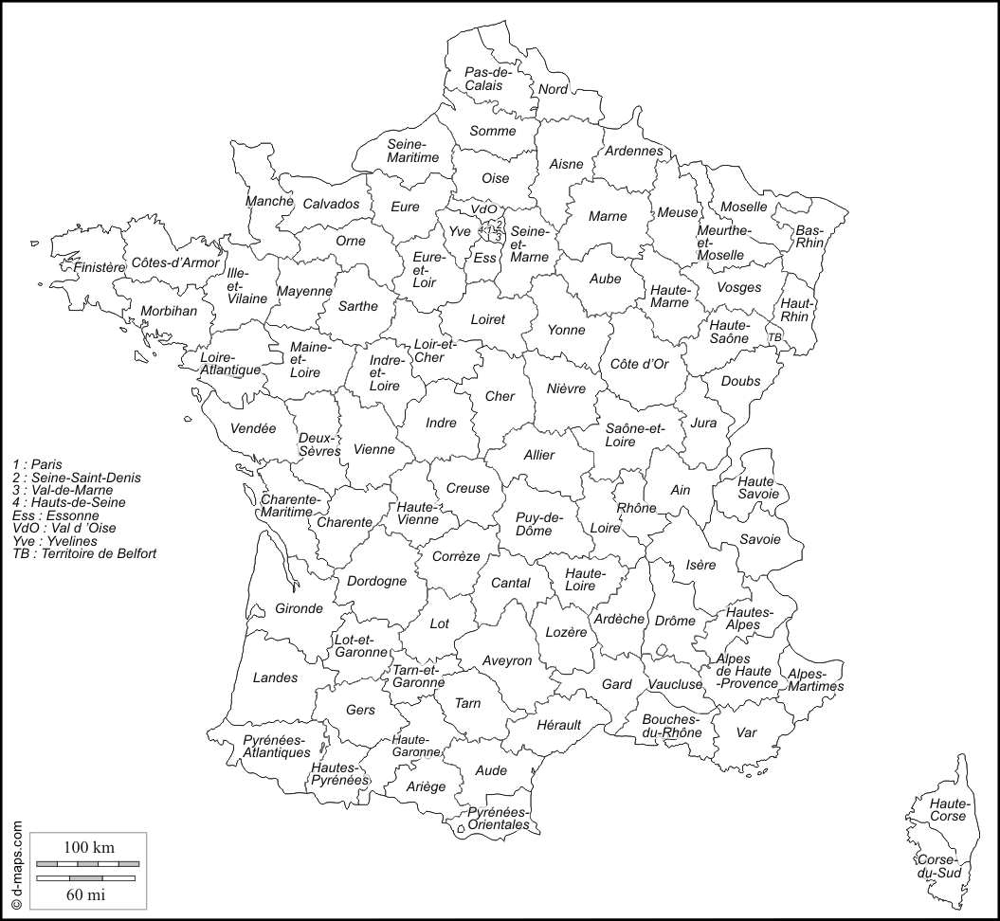
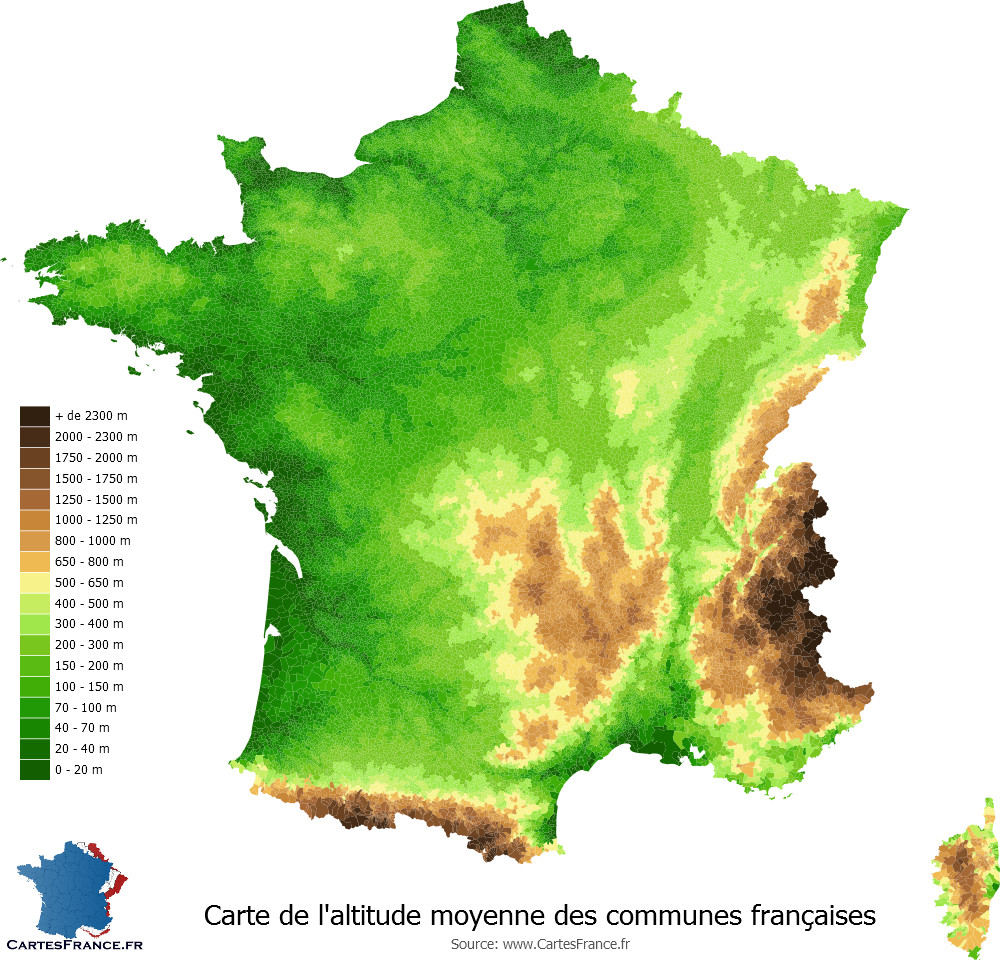
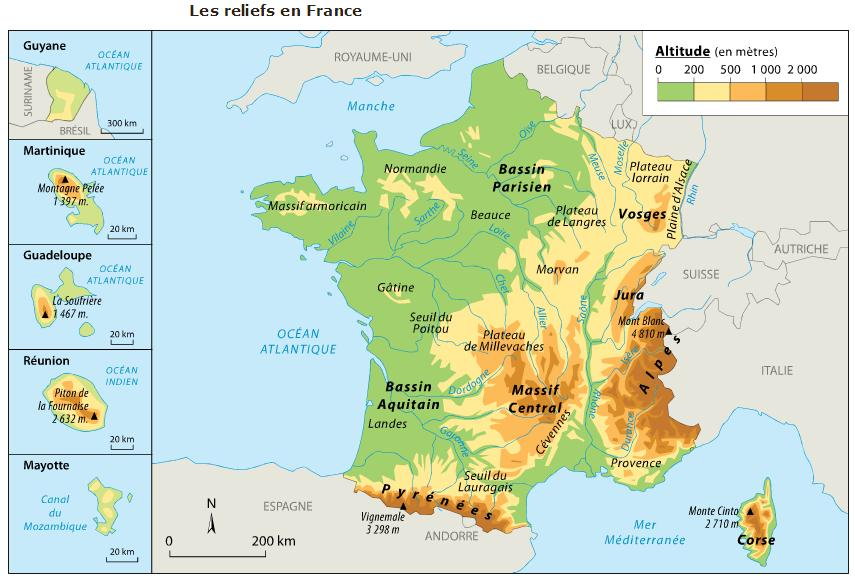
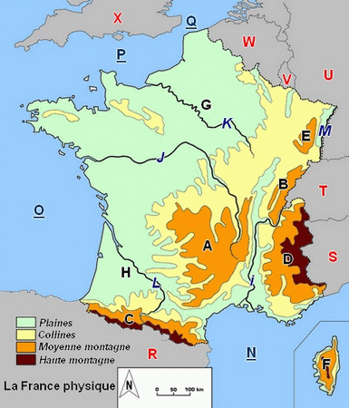
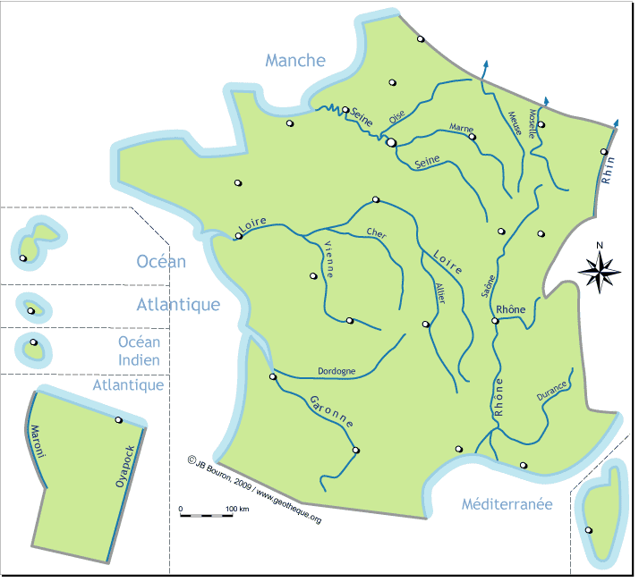

MACLASSE.COM

La France représente une superficie de 551 500km2. Elle s'étend de 1 000km du Nord au Sud et d'Est en Ouest. Ce qui fait de lui le troisième pays plus grand d'Europe. La France possède quatre façades maritimes, avec une longueure totale des côtes de 3 427km. Ses frontières naturelles sont le Rhin, les Alpes, le Jura et les Pyrénées.
Jusqu'en 2015, nous avions 27 régions administratives. Depuis le 1er Janvier 2016 elles sont au nombre de 18 : Bretagne, Normandie, Hauts-De-France, Grand Est, Ile-de-France, Centre Val de Loire, Bourgogne Franche-Comté, Auvergne Rhône-Alpes, Provence Alpes Cotes-d'Azur, Occitanie, Nouvelle-Aquitaine, Pays de La Loire, Corse, La Réunion, Mayotte, Guyanne, Martinique, Guadeloupe.
Nous avons également 101 départements en France. Il s'agit d'un découpage administratif de second niveau. Chaque département appartient à une région. 96 (de 1 à 95 avec la Corse 2A et 2B mais qui prend le numéro 20) départements en France métropolitaine et 5 départements en Outre mer et DOM (971 - 972 ...976).
L'altitude est l'élevation d'un point par rapport au niveau de la mer. Ainsi en France elle varie de - 4 m à + 4 810 m. Ce qui donne une altitude moyenne de 344 m pour le territoire.
Le relief de la France se caractérise par sa forme en "S". Il démarre des Vosges, descend dans la vallée du Rhônes puis longe sur l'ouest le sud du Massif Central et le nord des Pyrénées.
  En plus d'avoir de nombreuses côtes du nord au sud (la mer du Nord, la Manche, l'Océan Atlantique et la mer Méditerrannée). Le pays possède de nombreux cours d'eau. Avec comme plus long cours d'eau la Loire (1 012 km).
Au niveau hydrologique, la France occupe une place puissante en Europe. Son climat fait que les précipitations y sont élevées afin d'alimenter les cours d'eau.
Mentions légales / Qui sommes-nous ? / Plan du site
Nos matières : français - mathématiques - histoire - sciences - arts visuels - la cour de récré